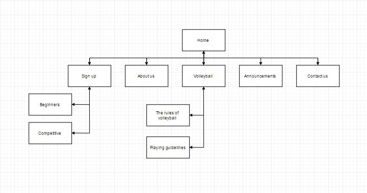

CP1406 - Assignment 1 - Project Plan
Name: Louise Jaeger
Goals
The goal of the website is to produce an increase of customers of at least 50%.
Success Evaluation
Other advertising will be consistent for a period of 3 months (except for including the new web site), so that any increase in sales should be attributable to the site. At the end of this 3 month period (and during), the number of new customers will be counted and compared to the previous 3 months.
Target Audience
Young families and high school kids between the age 15 and 30. The design of the site will be clean and with only few clicks they can find their group (beginner or competitive) and sign up. The design will be clean, so it both reach out to teenagers and adults.
Site Flowchart
This Site Flowchart show the hierarchy of pages in the site and their relationship. Every page is represented by a box.

https://github.com/LouiseJaeger/Assignment-1